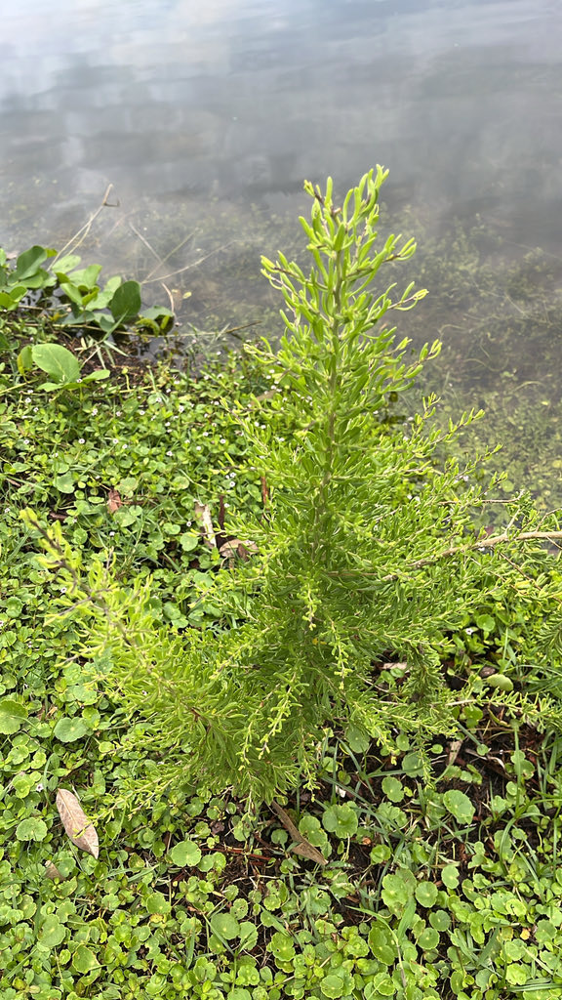

- A spiny Florida-native shrub of salty shorelines whose bright red berries are edible — a wild cousin of the goji berry.
- Native peoples and coastal communities ate the small red fruits, fresh or dried.
- It belongs to the nightshade family, with small lavender star-flowers to match.
- On the Texas coast the berries are a famous fall food for endangered whooping cranes — and here in Florida they feed shorebirds and coastal songbirds.
Native to coastal salt marshes, flats, and shorelines of the southeastern United States, including Florida, and the Gulf and Atlantic coasts. A tough specialist of salty, sandy, often flooded ground.
- Carolina wolfberry is a salt-tolerant native shrub that thrives along brackish shorelines and salt flats where few other plants persist. It is a true Lycium — the boxthorn genus — and a close relative of the goji berry (wolfberry) sold as a health food, which hints at its own edible fruit.
- The small, juicy, bright red berries are edible and were eaten, fresh or dried, by Native peoples and coastal communities. As a member of the nightshade family it carries the family's small, star-shaped lavender flowers, and as with many nightshades, the ripe fruit is the part to eat while the rest of the plant is best left alone.
- Ecologically the berries punch above their weight. On the Texas Gulf coast they are a documented key fall food for the endangered whooping cranes that winter there, whose arrival is timed to the berry crop. Florida's coast lies outside the whooping crane's wintering range, but here the same berries feed shorebirds and coastal songbirds — tying this unassuming shrub directly to coastal bird life.
The small flowers feed bees and other pollinators, and the red berries are an important coastal bird food — most famously a key fall food for the endangered whooping cranes that winter on the Texas Gulf coast, and here a food for Florida's shorebirds and coastal songbirds. The spiny, scrambling growth offers protected cover and nesting sites.
A spiny, sprawling to scrambling native shrub.
Small, lavender to white, star-shaped, nightshade-like.
Small, bright red, juicy berries.
Small, fleshy, narrow, gray-green, clustered along spiny stems.
A spiny coastal shrub with small fleshy gray-green leaves, lavender star-flowers, and bright red berries. The thorns plus succulent leaves on a shoreline mark it out.
The spines are the most immediate hazard — handle with care. The ripe red berries are a documented wild food, eaten fresh or dried, and are the only part of the plant considered edible; do not eat unripe fruit or foliage, as with other members of the nightshade family.
The berries are not listed on the ASPCA toxic-plants list for dogs, but a separate horticultural reference does flag the species, so keep pets from grazing freely on any part of the plant.

- © Franky McArthur (CC-BY-NC), via iNaturalist
- © Randall Carter (CC-BY-NC), via iNaturalist